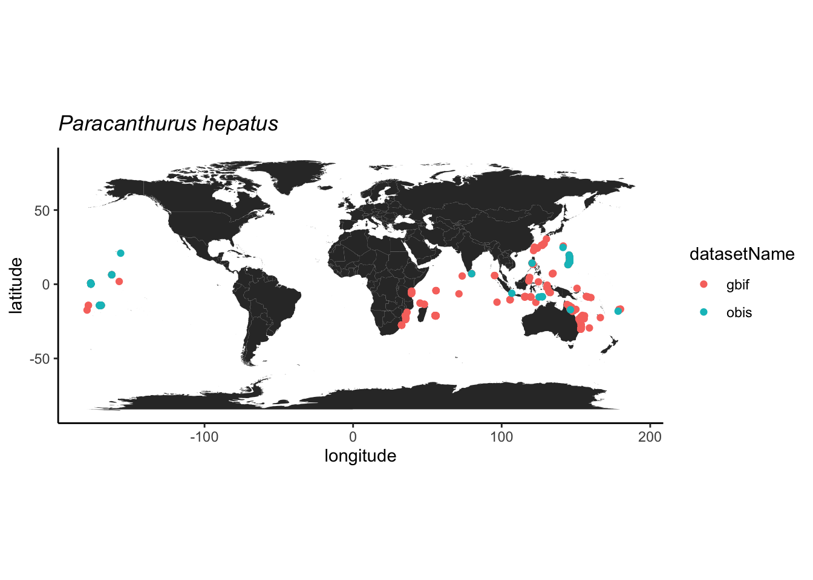

Atividade 2
Cesar Cordeiro
9/2/2021
Acesso a bancos de dados abertos
O acesso pode ser feito de diferentes formas, seja diretamente no website do repositório, utilizando-se pacotes específicos que acessam os repositórios via R ou Python, ou através de API (Application Programming Interface). Nesta última opção, o repositório é acessado por outro aplicativo ou serviço web para automatização de tarefas, seja em servidor local ou remoto, mas requer conhecimento de programação em Java e outras linguagens e não será tratado aqui.
Nesta atividade, temos como objetivo acessar um repositório de dados de ocorrência de espécies, inspecionar os dados, avaliar sua qualidade e fazer um mapa com as ocorrências.
Para iniciar, vamos escolher um repositório e uma espécie de interesse. Vamos iniciar com uma única espécie para facilitar as demais etapas.
O GBIF (Global Biodiversity Information Facility) é o maior repositório de ocorrências da biodiversidade da atualidade, então será nossa opção de repositório. No entanto, o OBIS (Ocean Biodiversity Information System) é um repositório dedicado às espécies marinhas e espelhado no GBIF. Assim, espera-se que algumas ocorrências sejam duplicadas nos dois repositórios.
Exemplo: Finding Dori
A espécie-alvo será o peixe marinho Paracanthurus hepatus, também conhecido como Blue Tang e, mais recentemente como  .
.
Nosso primeiro exemplor será com as ocorrencias do GBIF e, para tal, vamos utilizar o pacote rgbif.
GBIF
Vamos fazer uso do pacote tidyverse para manipular dos dados, então vamos carregar este pacote e o rgbif.
## ── Attaching packages ─────────────────────────────────────── tidyverse 1.3.0 ──## ✓ ggplot2 3.3.4 ✓ purrr 0.3.4
## ✓ tibble 3.1.2 ✓ dplyr 1.0.7
## ✓ tidyr 1.1.3 ✓ stringr 1.4.0
## ✓ readr 1.3.1 ✓ forcats 0.5.0## ── Conflicts ────────────────────────────────────────── tidyverse_conflicts() ──
## x dplyr::filter() masks stats::filter()
## x dplyr::lag() masks stats::lag()É importante explorar as funções do pacote e pode-se fazer isto usando o comando ?rgbif e, para ler sobre uma função em particular basta colocar ? em frente ao nome da função. Se o pacote não estiver carregado ou instalada é preciso usar ??.
A função occ_data faz uma busca simplificada das ocorrências no repositório do GBIF por meio do nome científico, número de identificação, país e outros. Neste caso, vamos procurar diretamente pelo nome da espécie-alvo. Outros atributos podem ser adicionados à função para refinar a busca, leia o material de ajuda da função para ter uma ideia. Vamos aproveitar alguns destes atributos e selecionar apenas ocorrências que possuem coordenadas e sem problemas geoespaciais.
# checar funcoes
?occ_data
# baixar ocorrencias
dori_gbif <- occ_data(scientificName = "Paracanthurus hepatus",
hasCoordinate = TRUE,
hasGeospatialIssue=FALSE)
# dimensoes
dim(dori_gbif)## NULLdim(dori_gbif$data)## [1] 500 150# checar campos
dori_gbif$data %>% names## [1] "key"
## [2] "scientificName"
## [3] "decimalLatitude"
## [4] "decimalLongitude"
## [5] "issues"
## [6] "datasetKey"
## [7] "publishingOrgKey"
## [8] "installationKey"
## [9] "publishingCountry"
## [10] "protocol"
## [11] "lastCrawled"
## [12] "lastParsed"
## [13] "crawlId"
## [14] "hostingOrganizationKey"
## [15] "basisOfRecord"
## [16] "occurrenceStatus"
## [17] "taxonKey"
## [18] "kingdomKey"
## [19] "phylumKey"
## [20] "classKey"
## [21] "orderKey"
## [22] "familyKey"
## [23] "genusKey"
## [24] "speciesKey"
## [25] "acceptedTaxonKey"
## [26] "acceptedScientificName"
## [27] "kingdom"
## [28] "phylum"
## [29] "order"
## [30] "family"
## [31] "genus"
## [32] "species"
## [33] "genericName"
## [34] "specificEpithet"
## [35] "taxonRank"
## [36] "taxonomicStatus"
## [37] "iucnRedListCategory"
## [38] "dateIdentified"
## [39] "coordinateUncertaintyInMeters"
## [40] "stateProvince"
## [41] "year"
## [42] "month"
## [43] "day"
## [44] "eventDate"
## [45] "modified"
## [46] "lastInterpreted"
## [47] "references"
## [48] "license"
## [49] "isInCluster"
## [50] "geodeticDatum"
## [51] "class"
## [52] "countryCode"
## [53] "country"
## [54] "rightsHolder"
## [55] "identifier"
## [56] "http://unknown.org/nick"
## [57] "verbatimEventDate"
## [58] "datasetName"
## [59] "verbatimLocality"
## [60] "collectionCode"
## [61] "gbifID"
## [62] "occurrenceID"
## [63] "taxonID"
## [64] "recordedBy"
## [65] "catalogNumber"
## [66] "http://unknown.org/occurrenceDetails"
## [67] "institutionCode"
## [68] "rights"
## [69] "eventTime"
## [70] "identifiedBy"
## [71] "identificationID"
## [72] "occurrenceRemarks"
## [73] "lifeStage"
## [74] "networkKeys"
## [75] "institutionKey"
## [76] "eventID"
## [77] "dataGeneralizations"
## [78] "vernacularName"
## [79] "otherCatalogNumbers"
## [80] "locationRemarks"
## [81] "taxonConceptID"
## [82] "depth"
## [83] "footprintWKT"
## [84] "county"
## [85] "identificationVerificationStatus"
## [86] "originalNameUsage"
## [87] "datasetID"
## [88] "nameAccordingTo"
## [89] "higherGeography"
## [90] "locality"
## [91] "language"
## [92] "type"
## [93] "higherClassification"
## [94] "individualCount"
## [95] "depthAccuracy"
## [96] "waterBody"
## [97] "sampleSizeUnit"
## [98] "sampleSizeValue"
## [99] "habitat"
## [100] "institutionID"
## [101] "islandGroup"
## [102] "http://rs.tdwg.org/dwc/terms/sampleSizeValue"
## [103] "georeferencedBy"
## [104] "maximumDistanceAboveSurfaceInMeters"
## [105] "georeferenceProtocol"
## [106] "island"
## [107] "verbatimDepth"
## [108] "http://rs.tdwg.org/dwc/terms/sampleSizeUnit"
## [109] "ownerInstitutionCode"
## [110] "samplingProtocol"
## [111] "elevation"
## [112] "elevationAccuracy"
## [113] "georeferenceSources"
## [114] "projectId"
## [115] "programmeAcronym"
## [116] "continent"
## [117] "organismQuantity"
## [118] "organismQuantityType"
## [119] "http://rs.tdwg.org/dwc/terms/organismQuantity"
## [120] "endDayOfYear"
## [121] "locationAccordingTo"
## [122] "startDayOfYear"
## [123] "http://rs.tdwg.org/dwc/terms/organismQuantityType"
## [124] "associatedReferences"
## [125] "recordNumber"
## [126] "collectionKey"
## [127] "fieldNumber"
## [128] "preparations"
## [129] "http://unknown.org/language"
## [130] "http://unknown.org/rights"
## [131] "http://unknown.org/rightsHolder"
## [132] "identificationRemarks"
## [133] "materialSampleID"
## [134] "disposition"
## [135] "municipality"
## [136] "collectionID"
## [137] "eventRemarks"
## [138] "locationID"
## [139] "bibliographicCitation"
## [140] "nomenclaturalCode"
## [141] "name"
## [142] "parentEventID"
## [143] "samplingEffort"
## [144] "coordinatePrecision"
## [145] "acceptedNameUsage"
## [146] "georeferenceVerificationStatus"
## [147] "previousIdentifications"
## [148] "acceptedNameUsageID"
## [149] "associatedSequences"
## [150] "created"Acima, vemos que o conjunto de dados tem ocorrências (uma por linha) e variáveis. As variáveis podem ser utilizadas para filtrar as ocorrências de acordo com o objetivo, além de fornecerem diversos dados a respeito das ocorrências, incluindo dados dos amostradores e detentores dos direitos. Vale notar que o conjunto de dados retornado pelo GBIF não é um data frame simples, mas sim um list que contém um conjunto de data frames. Para acessar estes data frames é necessário usar o operador $.
Problemas reportados
Um dos campos mais úteis dos dados é a coluna issues, pois ela indica problema já identificados pelo validador automático do repositório. Os problemas (issues) possuem um código que pode ser conferido pela função gbif_issues. Ao usar a função não é preciso indicar nenhum atributo, pois ela retornará um dataframe com as abreviações usadas e a descrição dos problemas catalogados no GBIF.
## code issue
## 1 bri BASIS_OF_RECORD_INVALID
## 2 ccm CONTINENT_COUNTRY_MISMATCH
## 3 cdc CONTINENT_DERIVED_FROM_COORDINATES
## 4 conti CONTINENT_INVALID
## 5 cdiv COORDINATE_INVALID
## 6 cdout COORDINATE_OUT_OF_RANGE
## 7 cdrep COORDINATE_REPROJECTED
## 8 cdrepf COORDINATE_REPROJECTION_FAILED
## 9 cdreps COORDINATE_REPROJECTION_SUSPICIOUS
## 10 cdround COORDINATE_ROUNDED
## 11 cucdmis COUNTRY_COORDINATE_MISMATCH
## 12 cudc COUNTRY_DERIVED_FROM_COORDINATES
## 13 cuiv COUNTRY_INVALID
## 14 cum COUNTRY_MISMATCH
## 15 depmms DEPTH_MIN_MAX_SWAPPED
## 16 depnn DEPTH_NON_NUMERIC
## 17 depnmet DEPTH_NOT_METRIC
## 18 depunl DEPTH_UNLIKELY
## 19 elmms ELEVATION_MIN_MAX_SWAPPED
## 20 elnn ELEVATION_NON_NUMERIC
## 21 elnmet ELEVATION_NOT_METRIC
## 22 elunl ELEVATION_UNLIKELY
## 23 gass84 GEODETIC_DATUM_ASSUMED_WGS84
## 24 gdativ GEODETIC_DATUM_INVALID
## 25 iddativ IDENTIFIED_DATE_INVALID
## 26 iddatunl IDENTIFIED_DATE_UNLIKELY
## 27 mdativ MODIFIED_DATE_INVALID
## 28 mdatunl MODIFIED_DATE_UNLIKELY
## 29 muldativ MULTIMEDIA_DATE_INVALID
## 30 muluriiv MULTIMEDIA_URI_INVALID
## 31 preneglat PRESUMED_NEGATED_LATITUDE
## 32 preneglon PRESUMED_NEGATED_LONGITUDE
## 33 preswcd PRESUMED_SWAPPED_COORDINATE
## 34 rdativ RECORDED_DATE_INVALID
## 35 rdatm RECORDED_DATE_MISMATCH
## 36 rdatunl RECORDED_DATE_UNLIKELY
## 37 refuriiv REFERENCES_URI_INVALID
## 38 txmatfuz TAXON_MATCH_FUZZY
## 39 txmathi TAXON_MATCH_HIGHERRANK
## 40 txmatnon TAXON_MATCH_NONE
## 41 typstativ TYPE_STATUS_INVALID
## 42 zerocd ZERO_COORDINATE
## 43 cdpi COORDINATE_PRECISION_INVALID
## 44 cdumi COORDINATE_UNCERTAINTY_METERS_INVALID
## 45 indci INDIVIDUAL_COUNT_INVALID
## 46 interr INTERPRETATION_ERROR
## 47 iccos INDIVIDUAL_COUNT_CONFLICTS_WITH_OCCURRENCE_STATUS
## 48 osiic OCCURRENCE_STATUS_INFERRED_FROM_INDIVIDUAL_COUNT
## 49 osu OCCURRENCE_STATUS_UNPARSABLE
## 50 geodi GEOREFERENCED_DATE_INVALID
## 51 geodu GEOREFERENCED_DATE_UNLIKELY
## 52 ambcol AMBIGUOUS_COLLECTION
## 53 ambinst AMBIGUOUS_INSTITUTION
## 54 colmafu COLLECTION_MATCH_FUZZY
## 55 colmano COLLECTION_MATCH_NONE
## 56 incomis INSTITUTION_COLLECTION_MISMATCH
## 57 inmafu INSTITUTION_MATCH_FUZZY
## 58 inmano INSTITUTION_MATCH_NONE
## 59 osifbor OCCURRENCE_STATUS_INFERRED_FROM_BASIS_OF_RECORD
## 60 diffown DIFFERENT_OWNER_INSTITUTION
## 61 taxmatagg TAXON_MATCH_AGGREGATE
## 62 anm ACCEPTED_NAME_MISSING
## 63 annu ACCEPTED_NAME_NOT_UNIQUE
## 64 anuidi ACCEPTED_NAME_USAGE_ID_INVALID
## 65 aitidinv ALT_IDENTIFIER_INVALID
## 66 bbmn BACKBONE_MATCH_NONE
## 67 basauthm BASIONYM_AUTHOR_MISMATCH
## 68 bibrinv BIB_REFERENCE_INVALID
## 69 chsun CHAINED_SYNOYM
## 70 clasna CLASSIFICATION_NOT_APPLIED
## 71 clasroi CLASSIFICATION_RANK_ORDER_INVALID
## 72 conbascomb CONFLICTING_BASIONYM_COMBINATION
## 73 desinv DESCRIPTION_INVALID
## 74 disinv DISTRIBUTION_INVALID
## 75 hom HOMONYM
## 76 minv MULTIMEDIA_INVALID
## 77 npm NAME_PARENT_MISMATCH
## 78 ns NO_SPECIES
## 79 nsinv NOMENCLATURAL_STATUS_INVALID
## 80 onder ORIGINAL_NAME_DERIVED
## 81 onnu ORIGINAL_NAME_NOT_UNIQUE
## 82 onuidinv ORIGINAL_NAME_USAGE_ID_INVALID
## 83 ov ORTHOGRAPHIC_VARIANT
## 84 pc PARENT_CYCLE
## 85 pnnu PARENT_NAME_NOT_UNIQUE
## 86 pnuidinv PARENT_NAME_USAGE_ID_INVALID
## 87 pp PARTIALLY_PARSABLE
## 88 pbg PUBLISHED_BEFORE_GENUS
## 89 rankinv RANK_INVALID
## 90 relmiss RELATIONSHIP_MISSING
## 91 scina SCIENTIFIC_NAME_ASSEMBLED
## 92 spprinv SPECIES_PROFILE_INVALID
## 93 taxstinv TAXONOMIC_STATUS_INVALID
## 94 taxstmis TAXONOMIC_STATUS_MISMATCH
## 95 unpars UNPARSABLE
## 96 vernnameinv VERNACULAR_NAME_INVALID
## 97 backmatagg BACKBONE_MATCH_AGGREGATE
## description
## 1 The given basis of record is impossible to interpret or seriously different from the recommended vocabulary.
## 2 The interpreted continent and country do not match up.
## 3 The interpreted continent is based on the coordinates, not the verbatim string information.
## 4 Uninterpretable continent values found.
## 5 Coordinate value given in some form but GBIF is unable to interpret it.
## 6 Coordinate has invalid lat/lon values out of their decimal max range.
## 7 The original coordinate was successfully reprojected from a different geodetic datum to WGS84.
## 8 The given decimal latitude and longitude could not be reprojected to WGS84 based on the provided datum.
## 9 Indicates successful coordinate reprojection according to provided datum, but which results in a datum shift larger than 0.1 decimal degrees.
## 10 Original coordinate modified by rounding to 5 decimals.
## 11 The interpreted occurrence coordinates fall outside of the indicated country.
## 12 The interpreted country is based on the coordinates, not the verbatim string information.
## 13 Uninterpretable country values found.
## 14 Interpreted country for dwc:country and dwc:countryCode contradict each other.
## 15 Set if supplied min>max
## 16 Set if depth is a non numeric value
## 17 Set if supplied depth is not given in the metric system, for example using feet instead of meters
## 18 Set if depth is larger than 11.000m or negative.
## 19 Set if supplied min > max elevation
## 20 Set if elevation is a non numeric value
## 21 Set if supplied elevation is not given in the metric system, for example using feet instead of meters
## 22 Set if elevation is above the troposphere (17km) or below 11km (Mariana Trench).
## 23 Indicating that the interpreted coordinates assume they are based on WGS84 datum as the datum was either not indicated or interpretable.
## 24 The geodetic datum given could not be interpreted.
## 25 The date given for dwc:dateIdentified is invalid and cant be interpreted at all.
## 26 The date given for dwc:dateIdentified is in the future or before Linnean times (1700).
## 27 A (partial) invalid date is given for dc:modified, such as a non existing date, invalid zero month, etc.
## 28 The date given for dc:modified is in the future or predates unix time (1970).
## 29 An invalid date is given for dc:created of a multimedia object.
## 30 An invalid uri is given for a multimedia object.
## 31 Latitude appears to be negated, e.g. 32.3 instead of -32.3
## 32 Longitude appears to be negated, e.g. 32.3 instead of -32.3
## 33 Latitude and longitude appear to be swapped.
## 34 A (partial) invalid date is given, such as a non existing date, invalid zero month, etc.
## 35 The recording date specified as the eventDate string and the individual year, month, day are contradicting.
## 36 The recording date is highly unlikely, falling either into the future or represents a very old date before 1600 that predates modern taxonomy.
## 37 An invalid uri is given for dc:references.
## 38 Matching to the taxonomic backbone can only be done using a fuzzy, non exact match.
## 39 Matching to the taxonomic backbone can only be done on a higher rank and not the scientific name.
## 40 Matching to the taxonomic backbone cannot be done cause there was no match at all or several matches with too little information to keep them apart (homonyms).
## 41 The given type status is impossible to interpret or seriously different from the recommended vocabulary.
## 42 Coordinate is the exact 0/0 coordinate, often indicating a bad null coordinate.
## 43 Indicates an invalid or very unlikely coordinatePrecision
## 44 Indicates an invalid or very unlikely dwc:uncertaintyInMeters.
## 45 Individual count value not parsable into an integer.
## 46 An error occurred during interpretation, leaving the record interpretation incomplete.
## 47 Example: individual count value > 0, but occurrence status is absent and etc.
## 48 Occurrence status was inferred from the individual count value
## 49 Occurrence status value can't be assigned to OccurrenceStatus
## 50 The date given for dwc:georeferencedDate is invalid and can't be interpreted at all.
## 51 The date given for dwc:georeferencedDate is in the future or before Linnean times (1700).
## 52 The given collection matches with more than 1 GrSciColl collection.
## 53 The given institution matches with more than 1 GrSciColl institution.
## 54 The given collection was fuzzily matched to a GrSciColl collection.
## 55 The given collection couldn't be matched with any GrSciColl collection.
## 56 The collection matched doesn't belong to the institution matched.
## 57 The given institution was fuzzily matched to a GrSciColl institution.
## 58 The given institution couldn't be matched with any GrSciColl institution.
## 59 Occurrence status was inferred from basis of records
## 60 The given owner institution is different than the given institution. Therefore we assume it doesn't belong to the institution and we don't link it to the occurrence.
## 61 Matching to the taxonomic backbone can only be done on a species level, but the occurrence was in fact considered a broader species aggregate/complex.
## 62 Synonym lacking an accepted name.
## 63 Synonym has a verbatim accepted name which is not unique and refers to several records.
## 64 The value for dwc:acceptedNameUsageID could not be resolved.
## 65 At least one alternative identifier extension record attached to this name usage is invalid.
## 66 Name usage could not be matched to the GBIF backbone.
## 67 The authorship of the original name does not match the authorship in brackets of the actual name.
## 68 At least one bibliographic reference extension record attached to this name usage is invalid.
## 69 If a synonym points to another synonym as its accepted taxon the chain is resolved.
## 70 The denormalized classification could not be applied to the name usage.
## 71 The given ranks of the names in the classification hierarchy do not follow the hierarchy of ranks.
## 72 There have been more than one accepted name in a homotypical basionym group of names.
## 73 At least one description extension record attached to this name usage is invalid.
## 74 At least one distribution extension record attached to this name usage is invalid.
## 75 A not synonymized homonym exists for this name in some other backbone source which have been ignored at build time.
## 76 At least one multimedia extension record attached to this name usage is invalid.
## 77 The (accepted) bi/trinomial name does not match the parent name and should be recombined into the parent genus/species.
## 78 The group (currently only genera are tested) are lacking any accepted species GBIF backbone specific issue.
## 79 dwc:nomenclaturalStatus could not be interpreted
## 80 Record has a original name (basionym) relationship which was derived from name & authorship comparison, but did not exist explicitly in the data.
## 81 Record has a verbatim original name (basionym) which is not unique and refers to several records.
## 82 The value for dwc:originalNameUsageID could not be resolved.
## 83 A potential orthographic variant exists in the backbone.
## 84 The child parent classification resulted into a cycle that needed to be resolved/cut.
## 85 Record has a verbatim parent name which is not unique and refers to several records.
## 86 The value for dwc:parentNameUsageID could not be resolved.
## 87 The beginning of the scientific name string was parsed, but there is additional information in the string that was not understood.
## 88 A bi/trinomial name published earlier than the parent genus was published.
## 89 dwc:taxonRank could not be interpreted
## 90 There were problems representing all name usage relationships, i.e.
## 91 The scientific name was assembled from the individual name parts and not given as a whole string.
## 92 At least one species profile extension record attached to this name usage is invalid.
## 93 dwc:taxonomicStatus could not be interpreted
## 94 no description
## 95 The scientific name string could not be parsed at all, but appears to be a parsable name type, i.e.
## 96 At least one vernacular name extension record attached to this name usage is invalid.
## 97 Name usage could only be matched to a GBIF backbone species, but was in fact a broader species aggregate/complex.
## type
## 1 occurrence
## 2 occurrence
## 3 occurrence
## 4 occurrence
## 5 occurrence
## 6 occurrence
## 7 occurrence
## 8 occurrence
## 9 occurrence
## 10 occurrence
## 11 occurrence
## 12 occurrence
## 13 occurrence
## 14 occurrence
## 15 occurrence
## 16 occurrence
## 17 occurrence
## 18 occurrence
## 19 occurrence
## 20 occurrence
## 21 occurrence
## 22 occurrence
## 23 occurrence
## 24 occurrence
## 25 occurrence
## 26 occurrence
## 27 occurrence
## 28 occurrence
## 29 occurrence
## 30 occurrence
## 31 occurrence
## 32 occurrence
## 33 occurrence
## 34 occurrence
## 35 occurrence
## 36 occurrence
## 37 occurrence
## 38 occurrence
## 39 occurrence
## 40 occurrence
## 41 occurrence
## 42 occurrence
## 43 occurrence
## 44 occurrence
## 45 occurrence
## 46 occurrence
## 47 occurrence
## 48 occurrence
## 49 occurrence
## 50 occurrence
## 51 occurrence
## 52 occurrence
## 53 occurrence
## 54 occurrence
## 55 occurrence
## 56 occurrence
## 57 occurrence
## 58 occurrence
## 59 occurrence
## 60 occurrence
## 61 occurrence
## 62 name
## 63 name
## 64 name
## 65 name
## 66 name
## 67 name
## 68 name
## 69 name
## 70 name
## 71 name
## 72 name
## 73 name
## 74 name
## 75 name
## 76 name
## 77 name
## 78 name
## 79 name
## 80 name
## 81 name
## 82 name
## 83 name
## 84 name
## 85 name
## 86 name
## 87 name
## 88 name
## 89 name
## 90 name
## 91 name
## 92 name
## 93 name
## 94 name
## 95 name
## 96 name
## 97 namePara checar os issues indicados na base baixada é necessário um pequeno tratamento, uma vez que algumas ocorrências possuem múltiplos problemas. Assim, utilizamos a função strsplit para individualizar os issues e poder conferí-los.
## code issue
## 1 conti CONTINENT_INVALID
## 2 cdreps COORDINATE_REPROJECTION_SUSPICIOUS
## 3 cdround COORDINATE_ROUNDED
## 4 cudc COUNTRY_DERIVED_FROM_COORDINATES
## 5 cum COUNTRY_MISMATCH
## 6 gass84 GEODETIC_DATUM_ASSUMED_WGS84
## 7 gdativ GEODETIC_DATUM_INVALID
## 8 refuriiv REFERENCES_URI_INVALID
## 9 osiic OCCURRENCE_STATUS_INFERRED_FROM_INDIVIDUAL_COUNT
## 10 colmafu COLLECTION_MATCH_FUZZY
## 11 colmano COLLECTION_MATCH_NONE
## 12 incomis INSTITUTION_COLLECTION_MISMATCH
## 13 inmafu INSTITUTION_MATCH_FUZZY
## 14 inmano INSTITUTION_MATCH_NONE
## description
## 1 Uninterpretable continent values found.
## 2 Indicates successful coordinate reprojection according to provided datum, but which results in a datum shift larger than 0.1 decimal degrees.
## 3 Original coordinate modified by rounding to 5 decimals.
## 4 The interpreted country is based on the coordinates, not the verbatim string information.
## 5 Interpreted country for dwc:country and dwc:countryCode contradict each other.
## 6 Indicating that the interpreted coordinates assume they are based on WGS84 datum as the datum was either not indicated or interpretable.
## 7 The geodetic datum given could not be interpreted.
## 8 An invalid uri is given for dc:references.
## 9 Occurrence status was inferred from the individual count value
## 10 The given collection was fuzzily matched to a GrSciColl collection.
## 11 The given collection couldn't be matched with any GrSciColl collection.
## 12 The collection matched doesn't belong to the institution matched.
## 13 The given institution was fuzzily matched to a GrSciColl institution.
## 14 The given institution couldn't be matched with any GrSciColl institution.
## type
## 1 occurrence
## 2 occurrence
## 3 occurrence
## 4 occurrence
## 5 occurrence
## 6 occurrence
## 7 occurrence
## 8 occurrence
## 9 occurrence
## 10 occurrence
## 11 occurrence
## 12 occurrence
## 13 occurrence
## 14 occurrenceA maioria dos problemas reportados é relacionado com discrepancias entre informações indicadas pelos autores e as levantadas pelo algoritmo de checagem, mas nenhum parece invalidar as ocorrências, por enquanto.
Prosseguimos selecionando algumas variáveis que serão úteis para a validação dos dados e futuras análises, como coordenadas, profundidade, nome da base de dados etc.
dori_gbif1 <- dori_gbif$data %>%
select(scientificName, acceptedScientificName, decimalLatitude, decimalLongitude,
issues, waterBody, basisOfRecord, occurrenceStatus, rightsHolder,
datasetName, recordedBy, depth, locality, habitat) Note que temos 500 ocorrências, no entanto, vamos ver quantas são únicas aplicando a função distinct do pacote dplyr.
dori_gbif1 <- dori_gbif1 %>%
distinct() No fim, observamos que ficamos com 376 ocorrências agora, e isso acontece por causa de diferenças em colunas que, neste caso, não serão usadas para o objetivo desta prática.
Para identificar todos os valores únicos presented nos dados, vamos aplicar a função unique a cada coluna com um loop na função lapply.
# checar niveis dos fatores
lapply(dori_gbif1, unique)## $scientificName
## [1] "Paracanthurus hepatus (Linnaeus, 1766)"
## [2] "BOLD:AAC3227"
## [3] "BOLD:AAT9935"
##
## $acceptedScientificName
## [1] "Paracanthurus hepatus (Linnaeus, 1766)"
## [2] "BOLD:AAC3227"
## [3] "BOLD:AAT9935"
##
## $decimalLatitude
## [1] -27.400000 -28.611278 -4.656524 -17.636875 25.015492 -6.353158
## [7] 4.595825 -18.287067 -13.647350 -8.349668 22.680278 -28.196141
## [13] 26.189035 -21.058230 -2.244373 -8.727807 -2.204717 -30.204320
## [19] -24.113638 15.022028 -5.816751 -5.840112 27.388889 -24.116345
## [25] -17.076469 -17.077753 -10.423094 -29.927833 -10.393100 -8.481814
## [31] -8.612647 1.615687 13.522638 13.518570 4.116129 0.186880
## [37] 0.798243 -28.611023 6.384268 -16.428461 27.328333 -4.714799
## [43] -16.767523 4.109330 -21.151370 -23.817600 -29.929429 -4.279653
## [49] -24.110377 -0.584608 -17.575953 14.865178 14.838945 13.282353
## [55] 18.169705 18.090721 18.144987 14.108882 14.169204 15.274841
## [61] 15.052066 14.927633 15.010917 15.192456 14.924998 -27.535837
## [67] 18.093946 18.050178 18.085108 15.134210 15.111052 15.113834
## [73] 16.718400 25.752000 -2.757490 13.686601 -5.820478 4.121438
## [79] -21.170370 -21.205960 -21.205150 -21.035070 -21.233100 -21.073840
## [85] -21.239710 -2.260250 -2.249608 -14.273857 -17.076470 -16.783458
## [91] -21.349500 -21.484390 -16.657679 -25.288066 30.487778 -8.400000
## [97] -21.319020 24.306446 -4.321165 -17.068420 -8.689442 -14.235900
## [103] -21.366690 -21.371320 -21.370350 26.291180 1.872135 0.187242
## [109] 0.190310 0.191557 0.822466 0.820899 -17.116486 -17.070283
## [115] -17.062497 -14.151863 -14.224068 -14.278573 -14.279030 -14.241373
## [121] -14.285210 -14.273254 16.135100 -21.660010 -21.991250 6.382461
## [127] -27.532000 24.436835 -5.611260 -27.525900 -15.484300 -8.537167
## [133] -8.475600 -4.530000 -5.304400 24.472500 -12.872840 23.212100
## [139] -12.672960 -4.714922 -21.015540 -21.015000 6.986900 7.134422
## [145] -27.520850 -27.523100 -17.408093 14.843660 18.149654 14.201462
## [151] 15.269845 15.261225 15.275189 15.268836 15.256714 15.282955
## [157] 15.275694 15.116363 14.934944 15.276654 15.281291 15.003307
## [163] -4.292379 -8.636633 17.591924 26.237900 24.455000 -23.322967
## [169] -23.890883 -8.349183 -8.277300 13.230371 -8.505400 -24.112880
## [175] 13.522800 -14.529133 -21.160690 -29.447500 -14.681537 -27.529900
## [181] -27.538681 -6.456933 -29.930400 -30.202300 5.550000 18.437700
## [187] -23.247900 -21.851700 -21.897300 -21.248000 -20.976700 -17.827500
## [193] -16.931600 -12.217000 27.510000 19.292300 -21.371260 -21.372000
## [199] -21.365210 16.383300 -17.092612 -17.100688 0.194956 0.195480
## [205] 0.190741 -8.556720 -26.822600 -6.634620 -8.277000 25.821500
## [211] -14.523517 3.352720 39.284700 -27.533300 -27.524900 -12.085451
## [217] -24.111530 19.675859 18.049572 15.110629 16.710502 15.105225
## [223] 15.091283 14.952465 15.255971 14.931544 20.748400 14.864917
## [229] 14.847157 15.077733 15.069572 15.086594 15.055609 -29.923100
## [235] -30.017600 16.324900 -23.796683 -23.848667 -23.745917 -21.150000
## [241] -21.146900 -18.846000 0.206550 0.190290 0.193110 -14.652800
## [247] -14.652770 -28.611000 -27.413500 -27.413510 -22.498100 25.034300
## [253] -10.429600 -10.428100 2.285408 -4.313293 12.601900 20.307600
## [259] 5.864600 -29.930440 -30.206662 15.273530 15.254217 15.268808
## [265] 15.004243 5.883700 5.875800 18.811222 17.607530 -29.933100
## [271] -29.912700 -30.201900 -29.912740 -29.933083 -8.277800 16.320100
## [277] 0.197000 -22.843333 -22.835000 -13.500000 -22.840000 -30.201700
## [283] -30.207000 -30.204300 -29.923140 -30.205030 -30.201670 -30.207010
## [289] -14.651927 7.366017 15.176020 17.586930 -21.060000 -10.446286
## [295] -21.349080 0.190850 14.246000 14.250000 -27.490000 7.117000
## [301] 7.120000 -8.945700 -8.179083 -23.883500 -23.886983
##
## $decimalLongitude
## [1] 153.56667 153.62837 39.36794 148.44080 122.00093 39.30729
## [7] 118.86434 147.69919 144.10688 116.06586 121.49028 153.57911
## [13] 127.40389 55.21915 130.55572 115.54442 130.56772 153.26482
## [19] 152.70748 145.57996 39.38253 39.46530 128.52111 152.70794
## [25] 179.11049 179.10984 105.66871 153.38925 105.66045 119.52971
## [31] 158.20064 124.73795 120.97290 120.99116 118.63001 -176.46176
## [37] -176.62003 153.62923 -162.46472 145.99662 128.55778 39.37970
## [43] 179.94055 118.62500 35.08851 35.40329 153.39147 55.72781
## [49] 152.71023 130.63281 178.98593 145.56811 145.53007 144.76383
## [55] 145.79179 145.76129 145.75369 145.16840 145.28545 145.79259
## [61] 145.65608 145.63037 145.58553 145.70396 145.64574 32.67988
## [67] 145.74479 145.70588 145.72653 145.67886 145.70275 145.69897
## [73] 145.77638 141.47400 150.71890 120.91363 39.38162 118.63332
## [79] 55.27931 55.27962 55.27898 55.21433 55.29266 55.22368
## [85] 55.30145 130.64465 130.62375 -169.49334 179.11049 179.92354
## [91] 55.46860 35.45493 146.02884 152.90847 130.15250 119.35000
## [97] 35.50786 124.09048 55.86569 179.10468 119.57251 -178.17400
## [103] 55.65609 55.68264 55.73661 126.78845 -157.42781 -176.46102
## [109] -176.45731 -176.48886 -176.62678 -176.62671 179.10813 179.10590
## [115] 179.09860 -169.61060 -169.51954 -170.54882 -170.54739 -170.67885
## [121] -170.54548 -170.50510 -61.77100 35.42359 35.38154 -162.42674
## [127] 32.68670 123.79669 132.74726 32.68540 147.10760 119.60195
## [133] 119.55653 131.65190 131.99690 122.96361 45.27593 -81.18580
## [139] 45.05137 39.37488 55.23410 55.23405 134.21884 134.22094
## [145] 32.68732 32.68600 -179.05644 145.56591 145.81155 145.26090
## [151] 145.78511 145.82889 145.82971 145.83191 145.81463 145.80272
## [157] 145.79354 145.69629 145.65172 145.82731 145.80069 145.67423
## [163] 55.86796 119.71143 145.81372 -80.00000 -81.85830 151.98242
## [169] 152.43017 116.05110 115.59450 144.64386 157.99209 152.71402
## [175] 120.99300 145.58833 55.83662 159.05390 145.43811 32.68800
## [181] 32.67879 71.25228 153.38980 153.26580 73.45000 -69.69920
## [187] 155.56720 153.52120 153.53760 155.76360 154.34530 148.50350
## [193] 149.99040 123.00390 34.18600 -81.10510 55.54613 55.54547
## [199] 55.53040 -86.40000 179.09921 179.12516 -176.48664 -176.48669
## [205] -176.48881 125.50000 32.88350 39.23600 115.59400 -77.93170
## [211] 145.58198 72.43150 -76.60830 32.68090 32.68440 96.87765
## [217] 152.71830 145.40914 145.70552 145.70190 145.76719 145.72023
## [223] 145.75022 145.61942 145.72341 145.63004 -86.88900 145.58005
## [229] 145.56905 145.65842 145.65610 145.65793 145.59721 153.38810
## [235] 153.26920 -86.57990 152.30293 152.38175 152.28250 55.83000
## [241] 55.82176 36.32800 -176.47949 -176.45685 -176.45694 145.45050
## [247] 153.62830 153.52520 153.62831 153.52519 166.44206 -77.39630
## [253] 105.66810 105.66580 118.24362 55.86585 -70.05770 -87.01840
## [259] 95.26880 153.38984 153.26605 145.79122 145.75177 145.83218
## [265] 145.58672 95.25900 95.25970 145.67677 145.81530 153.39260
## [271] 153.38340 153.26760 153.38342 153.39256 115.59460 -86.64170
## [277] -176.48620 35.55833 35.55100 47.95000 35.55000 153.26640
## [283] 153.26530 153.26480 153.38809 153.26635 153.26527 145.45101
## [289] 134.61270 145.78762 145.81808 55.22000 105.57552 55.46472
## [295] -176.48893 120.47900 120.48000 120.47900 32.70000 79.80800
## [301] 79.81000 79.80800 160.07777 156.98395 152.41978 152.42750
##
## $issues
## [1] "cdround" "cudc"
## [3] "cdround,cudc" "incomis,inmafu"
## [5] "" "cum,gass84,colmano,inmano"
## [7] "cdround,gass84,incomis,inmafu" "cudc,gass84,gdativ,refuriiv"
## [9] "cdreps" "osiic,colmano,inmano"
## [11] "cdround,gass84,colmano,inmano" "gass84"
## [13] "cum,gass84" "gass84,incomis,inmafu"
## [15] "gass84,osiic,colmafu" "gass84,osiic,colmafu,inmafu"
## [17] "cdround,cudc,gass84,gdativ,refuriiv" "colmano,inmafu"
## [19] "cdround,gass84,colmano,inmafu" "conti,cdround,gass84,osiic,inmafu"
## [21] "cudc,gass84,osiic" "cudc,colmano,inmafu"
## [23] "cudc,gass84" "osiic,colmano,inmafu"
## [25] "cdround,cudc,gass84"
##
## $waterBody
## [1] NA "North Pacific Ocean" "Celebes Sea"
## [4] "South Pacific Ocean" "Flores Sea" "Pacific"
## [7] "Caribbean Sea" "Gulf of Mexico" "Atlantic Ocean"
## [10] "Verde Island" "La Caleta" "Red Sea"
## [13] "Carribean" "Banda Sea" "Indian Ocean"
## [16] "IndianOcean" "Laut Bali" "Royal Caribbean"
## [19] "Laccadive Sea" "Baltimore, MD" "Carribean Sea"
##
## $basisOfRecord
## [1] "HUMAN_OBSERVATION" "PRESERVED_SPECIMEN" "MATERIAL_SAMPLE"
##
## $occurrenceStatus
## [1] "PRESENT"
##
## $rightsHolder
## [1] "Nigel Marsh" "Michal" "Wasini Tour Guide"
## [4] "John Sear" "顏水蛭" "Victor HOYEAU"
## [7] "Daniela Kupschus" "Sophie Duc" "tracc"
## [10] NA "Jacek Pietruszewski" "calvin1976"
## [13] "joseph_dibattista" "kfa" "desertnaturalist"
## [16] "Matthew Bokach" "Josh Moloney" "Peter"
## [19] "Zack" "GF" "Chen Zhi"
## [22] "warrencameron" "Mark Rosenstein" "hokoonwong"
## [25] "Robin Laws-Wall" "blackdogto" "craigjhowe"
## [28] "Lesley Clements" "Adelma Hills" "Albert Kang"
## [31] "Roxanne Lazarus" "Cameron" "mwamlavya"
## [34] "Diveboard" "Ian Shaw" "Geoff Shuetrim"
## [37] "nahpets" "Mathew" "Tony Strazzari"
## [40] "Francesco Ricciardi" "Joachim Louis" "João D'Andretta"
## [43] "bja2800dk" "Michael Long" "Geir Drange"
## [46] "David R" "Christian Doedt" "Carmelo López Abad"
## [49] "cindyjay" "RLS" "Ewout Knoester"
## [52] "Paolo Mazzei" "rowanwattpringle" "jeyre"
## [55] "brudermann" "Karen Willshaw" "ninjawil"
## [58] "gernotkunz" "Richard Ling" "SAIAB"
## [61] "sea-kangaroo" "tony rebelo"
##
## $datasetName
## [1] "iNaturalist research-grade observations"
## [2] NA
## [3] "NOAA Pacific Islands Fisheries Science Center, Ecosystem Sciences Division, National Coral Reef Monitoring Program: Stratified random surveys (StRS) of reef fish in the U.S. Pacific Islands"
## [4] "Diveboard - Scuba diving citizen science"
## [5] "Instituto Nacional de Investigação Pesqueira"
## [6] "NMNH Extant Biology"
## [7] "NOAA Pacific Islands Fisheries Science Center, Ecosystem Science Division Coral Reef Ecosystem Program, Rapid Ecological Assessments of Fish Belt Transect Surveys (BLT) at Coral Reef Sites across the Pacific Ocean from 2000 to 2009"
## [8] "Ocean Genome Legacy Collection"
##
## $recordedBy
## [1] "Nigel Marsh"
## [2] "Michal"
## [3] "Wasini Tour Guide"
## [4] "John Sear"
## [5] "顏水蛭"
## [6] "Victor HOYEAU"
## [7] "Daniela Kupschus"
## [8] "Sophie Duc"
## [9] "tracc"
## [10] NA
## [11] "Jacek Pietruszewski"
## [12] "calvin1976"
## [13] "joseph_dibattista"
## [14] "kfa"
## [15] "Bernard Ludwig, Sophie Porcheron, Lucie Ludwig (CSAL)"
## [16] "desertnaturalist"
## [17] "Matthew Bokach"
## [18] "Josh Moloney"
## [19] "Peter"
## [20] "Zack"
## [21] "GF"
## [22] "Chen Zhi"
## [23] "warrencameron"
## [24] "Mark Rosenstein"
## [25] "hokoonwong"
## [26] "Robin Laws-Wall"
## [27] "blackdogto"
## [28] "craigjhowe"
## [29] "Lesley Clements"
## [30] "Adelma Hills"
## [31] "Albert Kang"
## [32] "Diver initials CC"
## [33] "Diver initials TCW"
## [34] "Diver initials LMG"
## [35] "Roxanne Lazarus"
## [36] "Diver initials JWM"
## [37] "Cameron"
## [38] "mwamlavya"
## [39] "Thomas Chardon"
## [40] "Simão Elias Mupengo"
## [41] "Açúrcio Belmiro Cumbane"
## [42] "Ian Shaw"
## [43] "539637721"
## [44] "Geoff Shuetrim"
## [45] "nahpets"
## [46] "Diver initials VAB"
## [47] "Diver initials PMA"
## [48] "Diver initials RMW"
## [49] "Diver initials JPZ"
## [50] "Diver initials ARP"
## [51] "Diver initials KDG"
## [52] "Mathew"
## [53] "Tony Strazzari"
## [54] "Francesco Ricciardi"
## [55] "Joachim Louis"
## [56] "João D'Andretta"
## [57] "Nicet J.B., Pinault M.,Wickel J., Bigot L.,C. Bourmaud,Mulochau T., Zubia M., Conand C., Poupin,M. Schleyer,Benon P., G. Malfait"
## [58] "|RNMR, IRD, université de La Réunion"
## [59] "Rangel de Jesus"
## [60] "bja2800dk"
## [61] "xavier, tristan (haustral plongée)"
## [62] "Jorge Fichane Zibane"
## [63] "Michael Long"
## [64] "Kenneth Foster"
## [65] "Sebastien Rezzonico"
## [66] "Herculano Patricio"
## [67] "Isaias Jeckson Elija"
## [68] "Geir Drange"
## [69] "J. Williams & S. Planes"
## [70] "Nicet JB., Pinault M., Wickel J., Bigot L., Mulochau T., Zubia M., Conand C., Poupin J., Barrère A., Quod, J.P., Benon P"
## [71] "David R"
## [72] "Diver initials JMA"
## [73] "Diver initials AEG"
## [74] "Diver initials JMM"
## [75] "Christian Doedt"
## [76] "Diver initials KCL"
## [77] "Diver initials KS"
## [78] "Diver initials EMD"
## [79] "Marie"
## [80] "Gil Zaqueu Maquene"
## [81] "Silva Carlos Mondlane"
## [82] "Diver initials EC"
## [83] "Sam Hansen"
## [84] "Carmelo López Abad"
## [85] "cindyjay"
## [86] "lisa hengelein"
## [87] "JS"
## [88] "JPS"
## [89] "TPC"
## [90] "Maguelone GRATEAU, Henri GRATEAU (ESSOR)"
## [91] "David Bishop"
## [92] "Ewout Knoester"
## [93] "seastung"
## [94] "Pieterjl"
## [95] "angelique tourret (o sea bleu)"
## [96] "Diver initials KSM"
## [97] "Diver initials IDW"
## [98] "Paolo Mazzei"
## [99] "Morgan"
## [100] "Jyore"
## [101] "IVS"
## [102] "Viriato José Mutelecanamba"
## [103] "Christina Estrup"
## [104] "RSS"
## [105] "Anne Hoggett"
## [106] "rowanwattpringle"
## [107] "jeyre"
## [108] "Rowan Watt-Pringle"
## [109] "Gaither, Michelle R.; Wagner, Daniel"
## [110] "NAD"
## [111] "brudermann"
## [112] "Breezy"
## [113] "WCB"
## [114] "GJE"
## [115] "RJE"
## [116] "GER"
## [117] "AJG"
## [118] "Ilya Bychkov"
## [119] "Alf"
## [120] "Sean Shrum"
## [121] "Diver initials MON"
## [122] "Joao Sarmento"
## [123] "Cam"
## [124] "Shiko"
## [125] "Ryan Lee"
## [126] "Haydee Osorio"
## [127] "Steven Lawson"
## [128] "Bruno Amim"
## [129] "Anonymous"
## [130] "Elodie"
## [131] "Sea Escapes"
## [132] "Karen Willshaw"
## [133] "Diver initials SCM"
## [134] "Diver initials MF"
## [135] "Diver initials MKM"
## [136] "INCONNU (Non renseigné)"
## [137] "João Luís Dramane"
## [138] "Diver initials KMO"
## [139] "Diver initials JLG"
## [140] "TJA"
## [141] "AS"
## [142] "eric AMIEL (BioObs)"
## [143] "Rémi Forget"
## [144] "MLD"
## [145] "ninjawil"
## [146] "gernotkunz"
## [147] "Mike"
## [148] "JWG"
## [149] "AR"
## [150] "Richard Ling"
## [151] "TRD"
## [152] "T. Hunter"
## [153] "A.D. Connell"
## [154] "Serge Planes, Nicolas Hubert, Henrich Bruggemann"
## [155] "JRA"
## [156] "MS"
## [157] "Lynda Curtis"
## [158] "Noel Wangunu"
## [159] "sea-kangaroo"
## [160] "Daniel Yanke"
## [161] "tony rebelo"
## [162] "Ribanataake Awira"
##
## $depth
## [1] NA 18.000 20.700 5.450 10.600 20.000 11.745 13.500 16.500 15.400
## [11] 11.400 23.700 20.600 24.400 14.200 24.850 9.700 9.200 8.650 12.800
## [21] 14.650 12.700 9.300 4.800 20.150 14.550 23.400 21.300 21.350 12.250
## [31] 21.000 16.200 15.600 21.900 22.650 9.100 12.540 8.750 1.250 23.000
## [41] 19.200 18.950 6.850 6.350 15.950 17.800 9.000 8.500 13.000 9.400
## [51] 9.500 22.200 10.770 9.900 9.600 15.000 10.000 22.000 21.950 11.200
## [61] 21.200 21.500 19.400 5.300 8.800 17.050 11.600 11.000 5.500 7.200
## [71] 21.600 19.500 8.990 5.330 12.000 14.480 6.000 5.000 8.735 9.070
## [81] 7.000 12.500 8.000 4.900 6.095 2.285 25.700 27.000 7.470 19.000
## [91] 33.000 4.420 8.840 13.715 3.000 1.000 2.000 14.000 17.000
##
## $locality
## [1] NA
## [2] "west of Tamina, China, Oshima-gun, Okinoerabu-jima island, Amami Islands, Kagoshima, Japan"
## [3] "off Yakomo, China, Oshima-gun, Okinoerabu-jima island, Amami Islands, Kagoshima, Japan"
## [4] "Hanging Gardens"
## [5] "Govuro Mar Aberto"
## [6] "Jangamo Estuário"
## [7] "Curieuse Island"
## [8] "Japan, Ogasawara Is., Kazan Is. (Volcano Is.), Kita-Iwo-jima I., northeastern coast"
## [9] "Maxixe Estuário"
## [10] "Inhassoro MAI"
## [11] "3 Pulgul St, Urangan QLD 4655, Australia"
## [12] "Urasoko, Kuchierabujima,Yakushima, Kumage-gun, Kuchierabu-jima island, Osumi Islands, Kagoshima, Japan"
## [13] "Crystal Rock, Komodo National Park"
## [14] "Morrumbene Estuário"
## [15] "Inhassoro MAII"
## [16] "Wallis and Futuna, Futuna Island, exposed rocks off north point, exposed rocky reef and channels."
## [17] "Futuna, Wallis and Futuna, Futuna Island, exposed rocks of"
## [18] "Aquarium"
## [19] "Vilankulo MA II"
## [20] "Sodwana Bay, Bikini South"
## [21] "Sodwana Bay, Caves & Overhangs"
## [22] "Bougainville Reef Lagoon East"
## [23] "Pulau Kasiui SW"
## [24] "Kanar Yapas"
## [25] "Umabana, Yonaguni, Yonaguni, Yaeyama-gun, Yonaguni-jima island, Yaeyama Islands, Okinawa, Japan"
## [26] "Claraboyas Reef"
## [27] "Bikini"
## [28] "Sodwana Bay"
## [29] "Sunkist Reef"
## [30] "Rock Key (Reef)"
## [31] "Paradise House reef"
## [32] "Vilankulo MA I"
## [33] "The Atoll"
## [34] "Wreck 1"
## [35] "Lizard Island, Queensland"
## [36] "Sodwana Bay, Bikini"
## [37] "Chagos Archipelago, Great Chagos Bank"
## [38] "Elbow Cave Mooring N Solitary Is"
## [39] "South Boulder Wall"
## [40] "Los Paisanitos"
## [41] "Cato East"
## [42] "Saumarez SW Islet"
## [43] "Saumarez SW reef cay"
## [44] "Kenn Reef rubble"
## [45] "Frederick Ridge Rock"
## [46] "Flinders Reef Bommie"
## [47] "Chilcott Islet SW inner reef"
## [48] "Surge Crest East"
## [49] "Temple"
## [50] "Playing Field"
## [51] "40 Foot Wall"
## [52] "Dili Rock East"
## [53] "Steps"
## [54] "Sistersreef"
## [55] "Coral Garden"
## [56] "Coco Cay"
## [57] "Rangali Madivaru"
## [58] "National Aquarium"
## [59] "1, Sodwana Main Road"
## [60] "Bikini, Sodwana"
## [61] "Cerebros"
## [62] "Anemone Bay N Solitary Is"
## [63] "Manta Mooring NW Solitary Is"
## [64] "Overheat Reef"
## [65] "Gazelas Mar Aberto"
## [66] "Turtle Beach"
## [67] "Anemone mooring Julien Rocks"
## [68] "Shag Rock"
## [69] "Flying Fish Cove Boat Ramp"
## [70] "Smith Point"
## [71] "Antilla Wreck"
## [72] "Columbia"
## [73] "Lhok Weng"
## [74] "rubiah island"
## [75] "South End Nth Solitary"
## [76] "Fish Soup"
## [77] "Cleaner Station"
## [78] "Opposite Mimpi Resort"
## [79] "Light House"
## [80] "Pomene"
## [81] "Ouest, Nosy Be, Nosy-Kivindry"
## [82] "Madagascar:Antananarivo, Ouest, Nosy Be, Nosy-Kivindry"
## [83] "Mozambique:Pomene"
## [84] "North Boulder Wall S Solitary Is"
## [85] "Buchanans Wall"
## [86] "The Gantry S Solitary Is"
## [87] "Lizard Island Group"
## [88] "Ouest, St Gilles, Canyon"
## [89] "Reunion:Ouest, St Gilles, Canyon"
## [90] "Manila, 257 Quirino ave. Tambo P que"
## [91] "Philippines:Manila"
## [92] "Kochchikade, NO 331 Sarath Wattha"
## [93] "Sri Lanka:Western"
##
## $habitat
## [1] NA
## [2] "Forereef : ROB : Rock/Boulder"
## [3] "Forereef : SAG : Spur and Groove"
## [4] "Protected Slope : AGR : Aggregate Reef"
## [5] "Forereef : AGR : Aggregate Reef"
## [6] "Forereef : PSC : Pavement with Sand Channels"
## [7] "Forereef : PAV : Pavement"
## [8] "Forereef : PPR : Pavement with Patch Reefs"
## [9] "Forereef : RRB : Reef Rubble"
## [10] "Coral Reef"
## [11] "Forereef : MIX : Mixed Habitats"
## [12] "Forereef : UNK : Unknown"
## [13] "Shallow coral reef : Forereef"
## [14] "NA"Problemas não reportados
Agora iniciamos o processo de checagem mais fina que não é realizada pelo algoritmo, por apresenta especificidades que vão além de sua programação. Podemos iniciar checando a distribuição das ocorrências em relação às regiões oceanográficas indicadas nos dados (waterBody).
# investigar niveis suspeitos
dori_gbif1 %>%
distinct(waterBody) %>%
pull()## [1] NA "North Pacific Ocean" "Celebes Sea"
## [4] "South Pacific Ocean" "Flores Sea" "Pacific"
## [7] "Caribbean Sea" "Gulf of Mexico" "Atlantic Ocean"
## [10] "Verde Island" "La Caleta" "Red Sea"
## [13] "Carribean" "Banda Sea" "Indian Ocean"
## [16] "IndianOcean" "Laut Bali" "Royal Caribbean"
## [19] "Laccadive Sea" "Baltimore, MD" "Carribean Sea"# waterBody
dori_gbif1 %>%
group_by(waterBody) %>%
summarise(occ = length(scientificName)) %>%
ggplot(aes(occ, y=waterBody)) +
geom_bar(stat = 'identity') 
Aparentemente, esta espécie tem sido reportada no mundo todo. Com o sucesso da animação Procurando Nemo, já temos uma ideia de que a Dori tem ocorrência nas águas Australianas, mas podemos acessar bancos de dados especializados para checar estas informações. No caso de peixes (Osteichthyes e Chondrichthyes) o FishBase é a fonte mais atualizada de informações deste grupo. Depois desta confirmação, podemos suspeitar das ocorrências indicadas no Atlântico e, o tratamento mais rigoroso é a exclusão de qualquer ocorrência suspeita.
# fonte das regioes erradas
dori_gbif1 %>%
filter(waterBody %in% c("Atlantic Ocean", "Carribean", "Royal Caribbean", "Carribean Sea", "Bonaire")) %>%
distinct(datasetName)## # A tibble: 1 x 1
## datasetName
## <chr>
## 1 Diveboard - Scuba diving citizen scienceAlguma característica destas ocorrências do Atlântico podem dar pistas de como continuar filtrando os resultados. Neste caso, abaixo podemos ver que, ao investigarmos um programa de ciência específico de identificação realizada por mergulhadores amadores, notamos que este concentra a maior parte das suspeitas. Assim, é melhor ser conservador e remover todas as ocorrências associadas a tal programa.
# 27 ocorrencias
dori_gbif1 %>%
filter(datasetName %in% c("Diveboard - Scuba diving citizen science"))## # A tibble: 25 x 14
## scientificName acceptedScientifi… decimalLatitude decimalLongitude issues
## <chr> <chr> <dbl> <dbl> <chr>
## 1 Paracanthurus hep… Paracanthurus hep… 4.11 119. cdreps
## 2 Paracanthurus hep… Paracanthurus hep… -8.4 119. cdreps
## 3 Paracanthurus hep… Paracanthurus hep… 16.1 -61.8 cdreps
## 4 Paracanthurus hep… Paracanthurus hep… 23.2 -81.2 cdreps
## 5 Paracanthurus hep… Paracanthurus hep… 26.2 -80 cdreps
## 6 Paracanthurus hep… Paracanthurus hep… 24.5 -81.9 cdreps
## 7 Paracanthurus hep… Paracanthurus hep… 13.5 121. cdreps
## 8 Paracanthurus hep… Paracanthurus hep… 18.4 -69.7 cdreps
## 9 Paracanthurus hep… Paracanthurus hep… 27.5 34.2 cdreps
## 10 Paracanthurus hep… Paracanthurus hep… 19.3 -81.1 cdreps
## # … with 15 more rows, and 9 more variables: waterBody <chr>,
## # basisOfRecord <chr>, occurrenceStatus <chr>, rightsHolder <chr>,
## # datasetName <chr>, recordedBy <chr>, depth <dbl>, locality <chr>,
## # habitat <chr># filtrar todas do dataset suspeito
dori_gbif_ok <- dori_gbif1 %>%
filter(!datasetName %in% c("Diveboard - Scuba diving citizen science"))Agora não vemos mais nenhuma ocorrência no Atlântico!
# checar pontos
dori_gbif_ok %>%
leaflet() %>%
addTiles() %>%
addMarkers(~decimalLongitude, ~decimalLatitude,
popup = ~as.character(datasetName),
label = ~as.character(scientificName),
clusterOptions = markerClusterOptions())Podemos usar a profundidade como outro critério, pois esta espécie é associada apenas a recifes rasos segundo o FishBase. E parece tudo ok.
# checar profundidade
dori_gbif_ok %>%
ggplot(aes(x = depth, fill = waterBody)) +
geom_histogram() ## `stat_bin()` using `bins = 30`. Pick better value with `binwidth`.## Warning: Removed 216 rows containing non-finite values (stat_bin).
OBIS
Agora vamos fazer os mesmos procedimentos com os dados do OBIS, utilizando o pacote robis e a função occurrence deste pacote.
- Baixar as ocorrências
## OBIS
dori_obis <- robis::occurrence("Paracanthurus hepatus")## Retrieved 549 records of approximately 549 (100%)- Checar os dados
Temos variáveis com os mesmos nomes, pois ambos usam o sistema DwC, mas os problemas reportados neste caso são indicados na coluna flags.
# checar dados
names(dori_obis)## [1] "rightsHolder"
## [2] "country"
## [3] "scientificNameID"
## [4] "scientificName"
## [5] "individualCount"
## [6] "dropped"
## [7] "aphiaID"
## [8] "decimalLatitude"
## [9] "type"
## [10] "phylumid"
## [11] "familyid"
## [12] "catalogNumber"
## [13] "occurrenceStatus"
## [14] "basisOfRecord"
## [15] "terrestrial"
## [16] "superclass"
## [17] "id"
## [18] "order"
## [19] "recordNumber"
## [20] "superclassid"
## [21] "dataset_id"
## [22] "locality"
## [23] "decimalLongitude"
## [24] "collectionCode"
## [25] "speciesid"
## [26] "occurrenceID"
## [27] "suborderid"
## [28] "license"
## [29] "genus"
## [30] "collectionID"
## [31] "eventDate"
## [32] "brackish"
## [33] "coordinateUncertaintyInMeters"
## [34] "absence"
## [35] "genusid"
## [36] "originalScientificName"
## [37] "marine"
## [38] "subphylumid"
## [39] "institutionCode"
## [40] "wrims"
## [41] "class"
## [42] "suborder"
## [43] "orderid"
## [44] "kingdom"
## [45] "recordedBy"
## [46] "classid"
## [47] "phylum"
## [48] "species"
## [49] "subphylum"
## [50] "family"
## [51] "kingdomid"
## [52] "node_id"
## [53] "flags"
## [54] "sss"
## [55] "shoredistance"
## [56] "sst"
## [57] "bathymetry"
## [58] "date_year"
## [59] "date_end"
## [60] "date_start"
## [61] "date_mid"
## [62] "habitat"
## [63] "references"
## [64] "institutionID"
## [65] "year"
## [66] "language"
## [67] "modified"
## [68] "maximumDepthInMeters"
## [69] "verbatimEventDate"
## [70] "sampleSizeUnit"
## [71] "georeferencedBy"
## [72] "maximumDistanceAboveSurfaceInMeters"
## [73] "island"
## [74] "stateProvince"
## [75] "ownerInstitutionCode"
## [76] "samplingProtocol"
## [77] "eventID"
## [78] "scientificNameAuthorship"
## [79] "islandGroup"
## [80] "taxonRank"
## [81] "taxonID"
## [82] "minimumDepthInMeters"
## [83] "vernacularName"
## [84] "identifiedBy"
## [85] "dataGeneralizations"
## [86] "georeferenceProtocol"
## [87] "datasetName"
## [88] "geodeticDatum"
## [89] "waterBody"
## [90] "verbatimDepth"
## [91] "specificEpithet"
## [92] "depth"
## [93] "datasetID"
## [94] "occurrenceRemarks"
## [95] "sampleSizeValue"
## [96] "associatedReferences"
## [97] "dateIdentified"
## [98] "bibliographicCitation"
## [99] "footprintWKT"
## [100] "dynamicProperties"
## [101] "preparations"
## [102] "county"
## [103] "fieldNumber"
## [104] "day"
## [105] "endDayOfYear"
## [106] "footprintSRS"
## [107] "month"
## [108] "startDayOfYear"
## [109] "samplingEffort"
## [110] "countryCode"
## [111] "organismQuantity"
## [112] "organismQuantityType"
## [113] "coordinatePrecision"
## [114] "georeferenceRemarks"
## [115] "minimumElevationInMeters"
## [116] "maximumElevationInMeters"
## [117] "continent"
## [118] "eventTime"
## [119] "associatedMedia"
## [120] "associatedSequences"
## [121] "parentEventID"
## [122] "locationID"
## [123] "lifeStage"
## [124] "georeferencedDate"
## [125] "higherGeography"
## [126] "namePublishedInID"
## [127] "disposition"
## [128] "originalNameUsage"
## [129] "accessRights"
## [130] "eventRemarks"
## [131] "otherCatalogNumbers"
## [132] "typeStatus"
## [133] "sex"
## [134] "verbatimLatitude"
## [135] "higherClassification"
## [136] "verbatimLongitude"
## [137] "verbatimCoordinates"dori_obis1 <- dori_obis %>%
select(scientificName, decimalLatitude, decimalLongitude, bathymetry,
flags, waterBody, basisOfRecord, occurrenceStatus, rightsHolder,
datasetName, recordedBy, depth, locality, habitat) %>%
distinct()
# check problemas reportados (flags)
dori_obis1 %>%
distinct(flags)## # A tibble: 7 x 1
## flags
## <chr>
## 1 no_depth
## 2 <NA>
## 3 no_depth,on_land
## 4 depth_exceeds_bath
## 5 on_land
## 6 on_land,depth_exceeds_bath
## 7 depth_exceeds_bath,on_land# check NA em datasetName
dori_obis1 %>%
filter(!flags %in% c("no_depth,on_land", "on_land", "on_land,depth_exceeds_bath", "depth_exceeds_bath,on_land"),
is.na(datasetName)) %>%
distinct(waterBody)## # A tibble: 10 x 1
## waterBody
## <chr>
## 1 <NA>
## 2 Africa
## 3 Pacific Ocean
## 4 North America
## 5 Asia
## 6 Indian
## 7 indien
## 8 Pacific
## 9 Oceania
## 10 atlantiqueAqui usamos as flags para filtrar ocorrências em terra, além de remover dados sem nome de dataset (não temos como checar a origem adequadamente, então podemos tratar como suspeitos), filtrar ocorrências no Atlântico e verificar a profundidade reportada.
# depth ok
dori_obis1 %>%
filter(!flags %in% c("no_depth,on_land", "on_land", "on_land,depth_exceeds_bath", "depth_exceeds_bath,on_land"),
!is.na(datasetName),
!waterBody %in% c("North America", "North America Atlantic", "atlantique")) %>%
ggplot(aes(x = depth, fill = waterBody)) +
geom_histogram() ## `stat_bin()` using `bins = 30`. Pick better value with `binwidth`.## Warning: Removed 6 rows containing non-finite values (stat_bin).
# checar niveis
dori_obis1 %>%
filter(!flags %in% c("no_depth,on_land", "on_land", "on_land,depth_exceeds_bath", "depth_exceeds_bath,on_land"),
!is.na(datasetName),
!waterBody %in% c("North America", "North America Atlantic", "atlantique")) %>%
lapply(., unique)## $scientificName
## [1] "Paracanthurus hepatus"
##
## $decimalLatitude
## [1] 15.0912826 13.2823530 24.7975000 14.8436598 15.2748410 0.1868800
## [7] 18.1697050 14.8471569 15.0865944 15.2735300 14.9349439 0.1954804
## [13] -8.4180000 15.2751892 15.2688078 -14.2790305 -14.2785729 0.2065500
## [19] 0.7982430 -6.0790000 14.2460003 15.0695718 18.8112216 14.8389450
## [25] 16.7105020 14.9315443 -8.4156407 15.2688363 14.1692040 15.1052253
## [31] -8.4465079 0.1949556 15.2829550 15.0520660 0.1882000 15.0777326
## [37] 0.1902900 14.8649172 14.1088820 14.8651780 -18.1486000 15.0033074
## [43] 14.9276330 7.1170001 15.2612250 18.0851080 15.0109170 15.2559710
## [49] -14.1518635 15.1760200 0.1872420 15.2698445 15.1138340 0.1970000
## [55] -14.2413730 -8.3627887 6.3842680 -14.2240685 -14.2732544 20.9260006
## [61] 0.1931100 14.2014619 2.1641140 -14.2738570 0.8224659 -14.2852098
## [67] 19.6758593 15.2812907 15.2542167 15.1924560 14.9524648 0.1915569
## [73] 17.6075300 13.2303711 0.1908500 15.1106289 15.1110520 14.9249980
## [79] 15.2567141 18.0907210 6.3824613 15.1163631 -11.6505560 17.5869300
## [85] 0.8208993 0.1903102 15.1342100 -3.7833333 15.2756939 18.0495721
## [91] 18.0501780 17.5919243 0.1907412 18.1449870 0.1989000 18.1496535
## [97] 15.2766544 15.0556089 16.7184000 -8.6047191 18.0939460
##
## $decimalLongitude
## [1] 145.75022 144.76383 141.29083 145.56591 145.79259 -176.46176
## [7] 145.79179 145.56905 145.65793 145.79122 145.65172 -176.48669
## [13] 127.30900 145.82971 145.83218 -170.54739 -170.54882 -176.47949
## [19] -176.62003 106.83700 120.47900 145.65610 145.67677 145.53007
## [25] 145.76719 145.63004 127.31111 145.83191 145.28545 145.72023
## [31] 127.32029 -176.48664 145.80272 145.65608 -176.48273 145.65842
## [37] -176.45685 145.58005 145.16840 145.56811 178.37900 145.67423
## [43] 145.63037 79.80800 145.82889 145.72653 145.58553 145.72341
## [49] -169.61060 145.78762 -176.46102 145.78511 145.69897 -176.48620
## [55] -170.67885 127.10333 -162.46472 -169.51954 -170.50510 -156.45300
## [61] -176.45694 145.26090 118.64584 -169.49334 -176.62678 -170.54548
## [67] 145.40914 145.80070 145.75177 145.70396 145.61942 -176.48886
## [73] 145.81530 144.64385 -176.48893 145.70190 145.70275 145.64574
## [79] 145.81463 145.76129 -162.42674 145.69629 43.25722 145.81808
## [85] -176.62671 -176.45731 145.67886 128.12500 145.79354 145.70552
## [91] 145.70588 145.81372 -176.48881 145.75369 -176.48500 145.81155
## [97] 145.82731 145.59720 145.77638 125.21931 145.74479
##
## $bathymetry
## [1] 141 28 -3 -61 -72 33 1 91 -15 -4 88 -1 -37 63 -16
## [16] -10 122 170 9 292 -17 52 26 -52 -7 -2 -13 -109 -28 75
## [31] 264 -26 -27 -71 29 -42 15 35 -8 19 56 38 3 2 218
## [46] 55 322 126 7 17 266 181 132 -19 96 -66 14 151 47 111
## [61] -12
##
## $flags
## [1] NA "no_depth" "depth_exceeds_bath"
##
## $waterBody
## [1] "North Pacific Ocean" "Pacific Ocean" "South Pacific Ocean"
## [4] NA
##
## $basisOfRecord
## [1] "HumanObservation" "PreservedSpecimen"
##
## $occurrenceStatus
## [1] "present" "Present" NA
##
## $rightsHolder
## [1] NA "Bernice Pauahi Bishop Museum"
## [3] "Canadian Museum of Nature"
##
## $datasetName
## [1] "NOAA Pacific Islands Fisheries Science Center, Ecosystem Sciences Division, National Coral Reef Monitoring Program: Stratified random surveys (StRS) of reef fish in the U.S. Pacific Islands"
## [2] "Asia-Pacific Dataset"
## [3] "Ocean Genome Legacy Collection"
## [4] "NOAA Pacific Islands Fisheries Science Center, Ecosystem Science Division Coral Reef Ecosystem Program, Rapid Ecological Assessments of Fish Belt Transect Surveys (BLT) at Coral Reef Sites across the Pacific Ocean from 2000 to 2009"
## [5] "Bishop Museum Fish Specimens"
## [6] "Fish"
## [7] "Fish collection of National Museum of Nature and Science"
## [8] "Pacific Reef Assessment and Monitoring Program: Rapid Ecological Assessments of Fish Large-Area Stationary Point Count Surveys (SPC) at Coral Reef Sites across the Pacific Ocean from 2000 to 2007"
##
## $recordedBy
## [1] "Diver initials PMA" "Diver initials LMG" NA
## [4] "Diver initials EC" "Diver initials CC" "Diver initials JPZ"
## [7] "Diver initials MKM" "Diver initials VAB" "Diver initials KSM"
## [10] "Diver initials MON" "Diver initials EMD" "Diver initials AEG"
## [13] "Diver initials KMO" "Diver initials KDG" "Diver initials SCM"
## [16] "Diver initials KCL" "Diver initials MF" "Diver initials TCW"
## [19] "Diver initials JMM" "Diver initials KS" "Diver initials RMW"
## [22] "Diver initials JWM" "Diver initials IDW" "Diver initials JLG"
## [25] "Youngman, Philip M." "Diver initials ARP" "Diver initials JMA"
## [28] "Diver initials BDS"
##
## $depth
## [1] 25.70 11.40 NA 22.00 9.20 20.70 23.70 13.00 20.00 10.00 15.00 12.50
## [13] 4.60 21.50 23.00 9.70 5.45 12.00 15.40 21.00 11.00 2.70 19.40 9.30
## [25] 10.15 7.00 12.80 19.00 24.85 13.50 1.80 21.60 15.60 12.25 14.55 18.00
## [37] 12.70 21.20 21.90 9.00 9.40 9.75 10.60 22.20 11.60 5.00 9.10 15.95
## [49] 9.50 3.00 4.80 27.00 6.35 16.50 16.20 20.15 14.00 5.50 20.60 9.60
## [61] 7.20 17.00 8.65 19.20 6.85 17.05 11.20 21.35 21.30 19.50 14.65 9.90
## [73] 14.20 17.80 24.40 8.80 21.95 5.30 22.65 3.10 23.40 18.95 8.50
##
## $locality
## [1] NA
## [2] "East of Kangokuiwa, Io-sima"
## [3] "Viti Levu Island; W of Rat-Tail Passage"
## [4] "the lagoon in Tanjung Duwata"
## [5] "South Indian Ocean, 700 metres north of Hantsambu, off Itsandra"
## [6] "Indoneshia Ambon I. S coast Latsuhalat"
##
## $habitat
## [1] "Forereef : PAV : Pavement"
## [2] NA
## [3] "Forereef : AGR : Aggregate Reef"
## [4] "Forereef : ROB : Rock/Boulder"
## [5] "Forereef : UNK : Unknown"
## [6] "Forereef : MIX : Mixed Habitats"
## [7] "Forereef : SAG : Spur and Groove"
## [8] "NA"
## [9] "Forereef : PSC : Pavement with Sand Channels"
## [10] "Forereef : PPR : Pavement with Patch Reefs"
## [11] "Shallow coral reef : Forereef"
## [12] "Forereef : RRB : Reef Rubble"
## [13] "Forereef : SCR : Sand with Scattered Coral/Rock"
## [14] "Protected Slope : AGR : Aggregate Reef"# ok
dori_obis_ok <- dori_obis1 %>%
filter(!flags %in% c("no_depth,on_land", "on_land", "on_land,depth_exceeds_bath", "depth_exceeds_bath,on_land"),
!is.na(datasetName),
!waterBody %in% c("North America", "North America Atlantic", "atlantique")) Podemo usar um mapa interativo para verificar melhor cada ocorrência com a função leaflet do pacote de mesmo nome.
# check
dori_obis_ok %>%
leaflet() %>%
addTiles() %>%
addMarkers(~decimalLongitude, ~decimalLatitude,
popup = ~as.character(datasetName),
label = ~as.character(recordedBy),
clusterOptions = markerClusterOptions())Parece tudo ok, e chegamos a 139 ocorrências potenciais.
Por fim, vamos unir todas as ocorrências, checar se existem duplicatas e plotar o resultado final.
# unir GBIF e OBIS
rm(list = setdiff(ls(), c("dori_obis_ok", "dori_gbif_ok")))
# ver diferencas
setdiff(names(dori_gbif_ok), names(dori_obis_ok))## [1] "acceptedScientificName" "issues"setdiff(names(dori_obis_ok), names(dori_gbif_ok))## [1] "bathymetry" "flags"all_data <- bind_rows(dori_gbif_ok %>%
mutate(repo = paste0("gbif", row.names(.))),
dori_obis_ok%>%
mutate(repo = paste0("obis", row.names(.)))) %>%
column_to_rownames("repo") %>%
select(decimalLongitude, decimalLatitude, depth) %>%
distinct()
# map the occurrence data:
maps::map("world", main = "Paracanthurus hepatus")#, xlim = range(all_data$decimalLongitude), ylim = range(all_data$decimalLatitude))
points(all_data[ , c("decimalLongitude", "decimalLatitude")], pch = ".", cex = 4, col = "red")
Colabore, espalhe a palavra, mas cite as fontes!